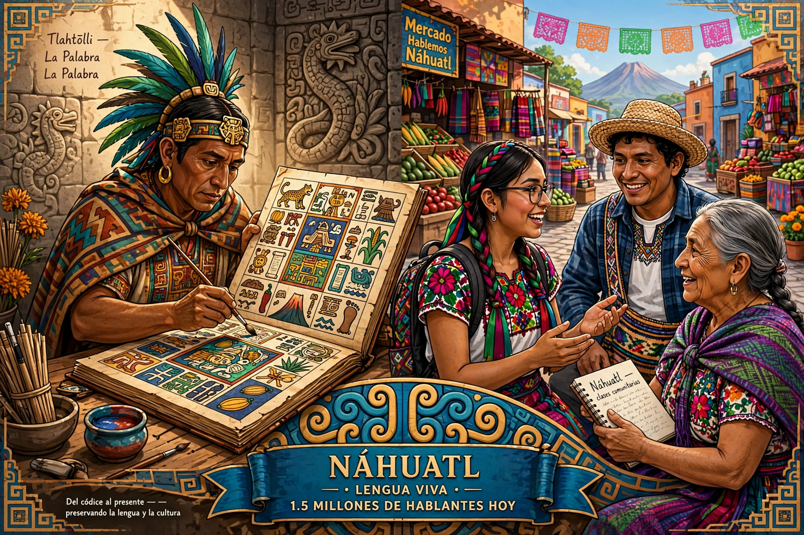

Nahuatl (English: /ˈnɑːwɑːtəl/; Nahuatl: Nāhuatlahtōlli) is a group of languages of the Uto-Aztecan language family, spoken by about 1.7 million Nahua peoples in Central Mexico and, historically, elsewhere in Mesoamerica. It was the lingua franca of the Aztec (Mexica) Empire and is the most widely spoken indigenous language in Mexico.

| Native to | Mexico; historically El Salvador (Pipil) |
|---|---|
| Speakers | c. 1.7 million (2020) |
| Family | Uto-Aztecan > Nahuan |
| Early form | Classical Nahuatl |
| Writing system | Latin; historically Aztec pictorial script |
Nahuan languages spread from northwestern Mexico into the Valley of Mexico by around the 5th–7th centuries CE. Classical Nahuatl was the language of the Mexica and of extensive colonial-era literature — codices, the Florentine Codex compiled under Bernardino de Sahagún, grammars such as Horacio Carochi's (1645), and annals. Spanish borrowed many Nahuatl words, some passing into English: tomato, chocolate, avocado, coyote, chipotle.
Nahuatl is polysynthetic and agglutinative: verbs incorporate subjects, objects and adverbial elements, and nouns take absolutive suffixes (-tl, -tli, -li, -in) dropped in possessed/compound forms. Modern varieties differ in phonology (e.g. /tɬ/ developments) and mutual intelligibility, and Mexico's INALI recognises many variants. Language shift to Spanish continues, though bilingual education and cultural revival efforts exist.